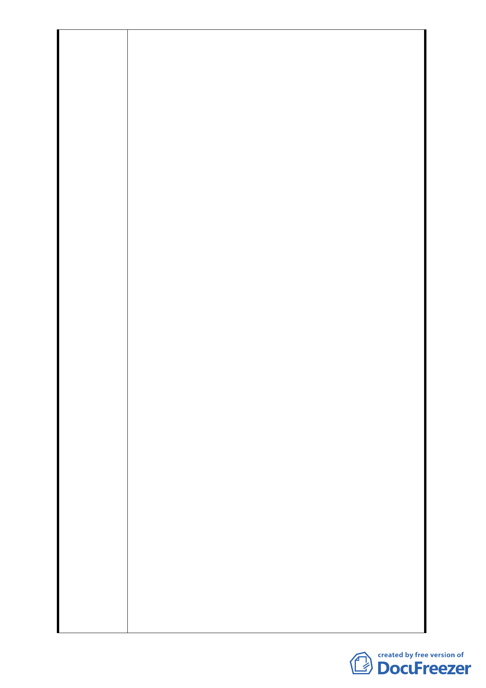

同意彌補將 A1 街廓之容積 1,069.98 ㎡移入 A2 街廓，始
A2 街廓土地之容積樓地板面積=7715.25 ㎡（原容積）
+1,069.98 ㎡（移入之 A1 容積）=8,784.23 ㎡，其容積率
約=8,784.23 ㎡/3,429 ㎡=256％，將本區之使用分區另以
「第三種住宅區（特）」編定之，使本區北側有完整之「公
園用地」，而屬於地主們之容積亦未減少，則可型成地主
們予市政府之間「雙贏」圓滿結果。
3. 就「臺北市土地使用分區管制規則」而言，本基地屬「第
三種住宅區」，容積率 225％、建蔽率 45％，且本基地緊
鄰小巷弄的「住三」土地。若基地容積僅為 225％，本
基地在規劃上之土地效益並不高。
另一本細部計畫之「指定留設公共開放空間系統示
意圖」規定，本案需在東側留設 2 公尺寬人行步道、北
側與南側各留設 1.5 公尺寬人行步道，此舉已符合「開
放空間」之部分精神。
在景觀方面，萬壽橋至新光路一段 66 巷北側之街廓
已編定為「公園用地」，且前面景美溪河濱公原寬度達一
百五十公尺，為了與河岸景觀串連，日後建築規劃除了
留設三公尺寬之前院外，將再退縮留設出更多空地來規
劃完整植栽景觀。本案在建蔽率不變的情況下，若能適
度放寬容積、增加建築物高度，並不會對如此寬闊的河
岸景觀造成影響，而且可透過天際線的造型變化與環境
產生呼應對話，使建築造型成為河岸景觀的一部分。
也許委員會擔心過高之建築物會對景觀造成衝擊，
但以目前基地北側之「紫藤樓社區」為例，因早期適用
「開放空間獎勵」，使用分區屬「住三之一」，容積已高
達 300％，在加上「開放空間獎勵」及其他獎勵之容積，
造就現今樓高十四層、將近五十公尺之社區住宅大樓，
但其本身並未對附近環境造成不良影響，反而成為本地
優良之社區，其社區住戶在「素質與數量」上都非常優
秀，是本區相當成功的高層住宅案例。由此可見，透過
完善的設計與規劃，高層建築也可以是對環境友善的「好
建築」。
4. 重劃區面積總共不過約 1,300 餘坪，而地主們之土地，
歷經行水區堤防用地、防汛道路、防汛溝渠之分割徵收，
每人持分所有面積已微乎其微，本市地重劃案有如「畸
零地的整頓」。本重劃範圍內之地主早期均以務農為主，
其持有之農地早期大多被政府所徵收或劃為防汛用地不
可開發，不少地主至今仍租屋居住、無力買屋，更無財
力自力建屋，屬於本區之弱勢群族。若可適度給予土地
在容積上的補償、或放寬部分之容積獎勵，可增加日後
- 19 -